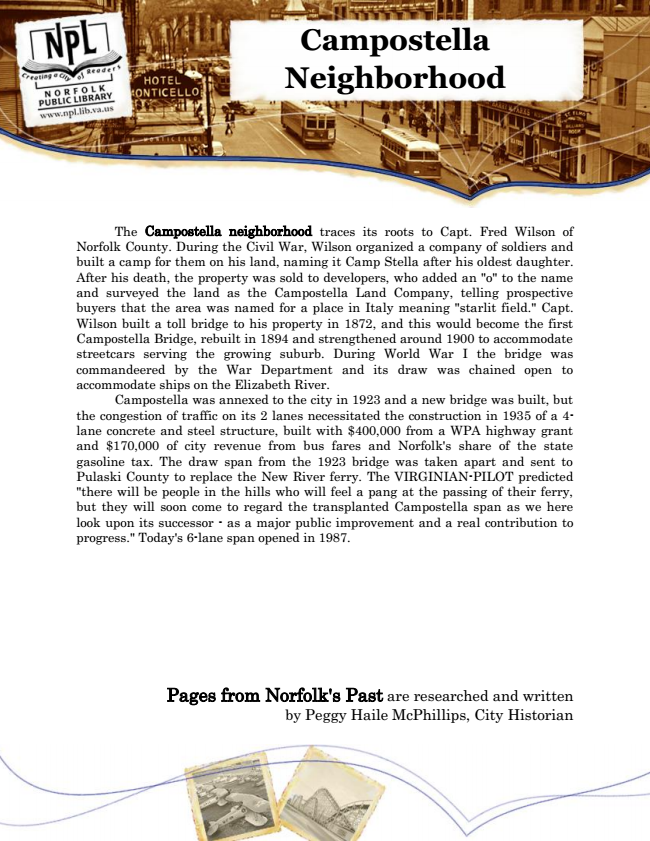

Campostella Neighborhood
The Campostella neighborhood traces its roots to Capt. Fred Wilson of Norfolk County. During the Civil War, Wilson organized a company of soldiers and built a camp for them on his land, naming it Camp Stella after his oldest daughter. After his death, the property was sold to developers, who added an "o" to the name and surveyed the land as the Campostella Land Company, telling prospective buyers that the area was named for a place in Italy meaning "starlit field." Capt. Wilson built a toll bridge to his property in 1872, and this would become the first Campostella Bridge, rebuilt in 1894 and strengthened around 1900 to accommodate streetcars serving the growing suburb. During World War I the bridge was commandeered by the War Department and its draw was chained open to accommodate ships on the Elizabeth River.
Campostella was annexed to the city in 1923 and a new bridge was built, but the congestion of traffic on its 2 lanes necessitated the construction in 1935 of a 4- lane concrete and steel structure, built with $400,000 from a WPA highway grant and $170,000 of city revenue from bus fares and Norfolk's share of the state gasoline tax. The draw span from the 1923 bridge was taken apart and sent to Pulaski County to replace the New River ferry. The VIRGINIAN-PILOT predicted "there will be people in the hills who will feel a pang at the passing of their ferry, but they will soon come to regard the transplanted Campostella span as we here look upon its successor - as a major public improvement and a real contribution to progress." Today's 6-lane span opened in 1987.
Pages from Norfolk's Past are researched and written by Peggy Haile McPhillips, City Historian